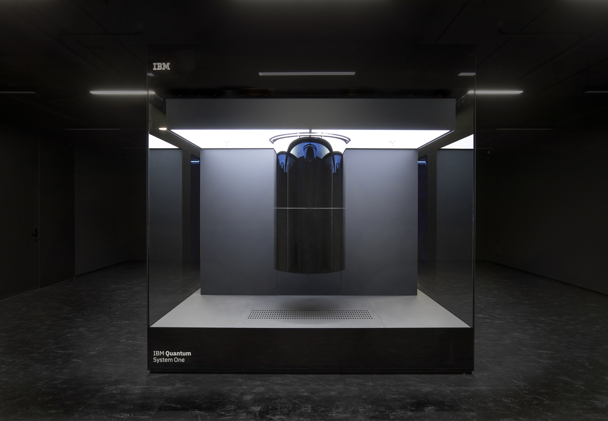

02
Superkonduktor: Komputasi Tanpa Hambatan
Pas didinginkan sampai minus 273°C, elektron bisa meluncur bebas tanpa gesekan atom sama sekali. Nol hambatan, nol panas!

DILUTION REFRIGERATOR (-273°C)
Kulkas Emas Pendingin Kuantum
Tabung tembaga berlapis emas murni buat buang panas keluar sampai sirkuit mencapai 15 milikelvin (jauh lebih dingin dari luar angkasa).
CARA KERJA LOGIKANYA
BIT BIASA
0 ATAU 1
QUBIT KUANTUM
|0⟩ + |1⟩ SEKALIGUS
Prinsip Superposisi bikin 50 Qubit sanggup ngitung triliunan kombinasi sekaligus. Kalkulasi ribuan tahun kelar dalam hitungan menit!
Zero Resistance: Arus muter terus tanpa hambatan kabel
Entanglement: Qubit saling terhubung instan tanpa kabel
Tantangan: Super sensitif! Goyang atau hangat dikit, hitungannya bisa ambyar.